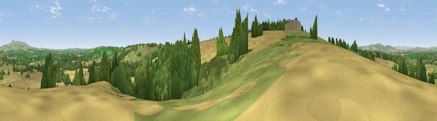

Viewpoint near Whyle
#15477 in England · top 40% of its area beats it · near WhyleWhere it is
The exact computed spot (SO 56725 64375). Click the marker for map links.
The view, rendered

A 360° render of this exact spot computed from the terrain model, tree cover and land cover — summer colours, afternoon light, calibrated against photographs of famous viewpoints. Real trees, hedges and buildings will differ in detail.
The panorama
Grey silhouette: terrain skyline in each direction (720 bearings, Earth curvature and refraction included). Dashed green: skyline with trees (+15 m) and buildings (+8 m) as obstacles. Blue strip: how far the ground is visible on each bearing.
Where the view opens
Wedge length = distance to the farthest visible ground on that bearing (vegetation-aware). Rings at 10, 25 and 50 km.
What fills the view
58% cropland · 25% grassland · 17% woodland
Angular shares of the visible panorama (visual magnitude), not map area. Landscape diversity 0.43 (0–1 Shannon).
Key numbers
More beautiful places nearby
The staircase of upgrades: each row has a higher view potential than everything closer. Driving times are estimates from straight-line distance, calibrated against real road routing — check an actual route before setting out.
| Place | Direction | Drive | Score |
|---|---|---|---|
| Viewpoint near Bockleton | ESE · 2 km | ~5 min | 61.5 |
| Viewpoint near Tenbury Wells | E · 4 km | ~8 min | 66.3 |
| Viewpoint near Bockleton | ESE · 5 km | ~11 min | 68.1 |
| Viewpoint near Upper Sapey | E · 9 km | ~18 min | 69.8 |
| Viewpoint near Upper Rochford | E · 9 km | ~18 min | 71.0 |
| Viewpoint near Hope Bagot | NNE · 10 km | ~19 min | 73.7 |
| Viewpoint near Yarpole | WNW · 11 km | ~21 min | 78.1 |
| Viewpoint near Cleehill | N · 12 km | ~22 min | 82.3 |
52.27581, -2.63568 · source: screening · position refined by local search. Computed location — check access rights before visiting.